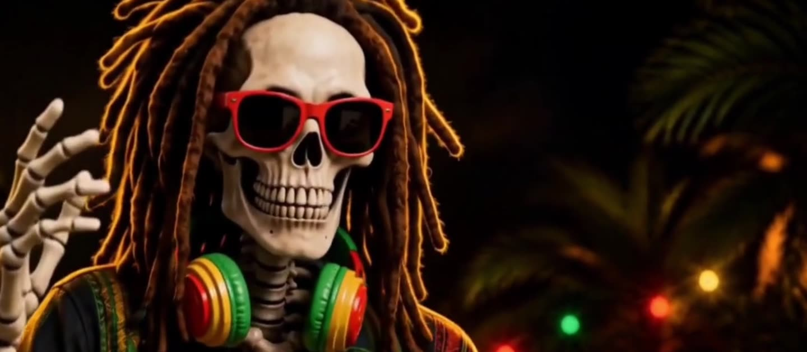
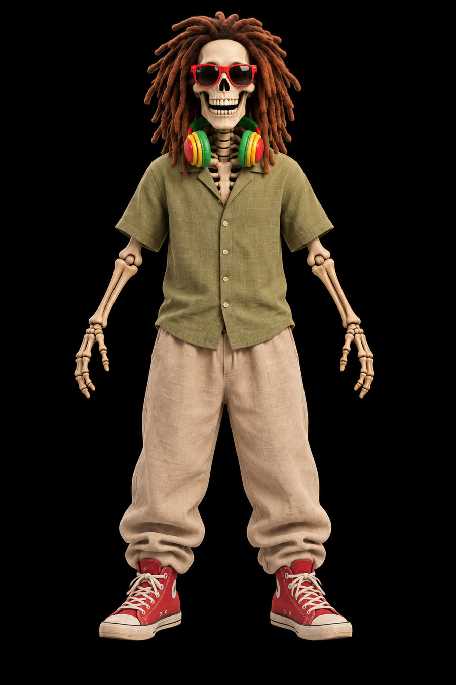

ZION
SKANK
A grinning rasta skeleton in red shades, singing his way through felt towns, anime cities, video games and neon Halloween streets. Songs and direction by James. Each film is produced by Claude, and each has a second cut by ChatGPT.
The catalogue
Newest first · ZS = catalogue number
Same bones, new world every time
Zion Skank is the face of James's reggae. Each film drops him into a new art style and a new fusion of reggae with something else, but a handful of things never change, and every prompt carries them.
- FaceA grinning skull, always smiling. When he sings, the jaw opens; no lips, no tongue.
- ShadesRed sunglasses, always on. His eyes are never shown.
- HairLong brown dreadlocks.
- HeadphonesRed, gold and green, around his neck.
- ShoesRed high-top sneakers.
- MoodPlayful and positive. Spooky-cute at most, never gory.
How they're made
The usual route for a story filmSong
James writes the idea; Claude drafts lyrics and the style prompt; Suno makes the track.
Zion's look
A character sheet in the film's style, made in ChatGPT from a reference.
Boards
Action-board stills timed to the song, one prompt at a time.
Clips
Each board becomes a short AI video clip; singing shots get lip sync.
The edit
Claude cuts on the beat and adds lyrics, effects and graphics in code.